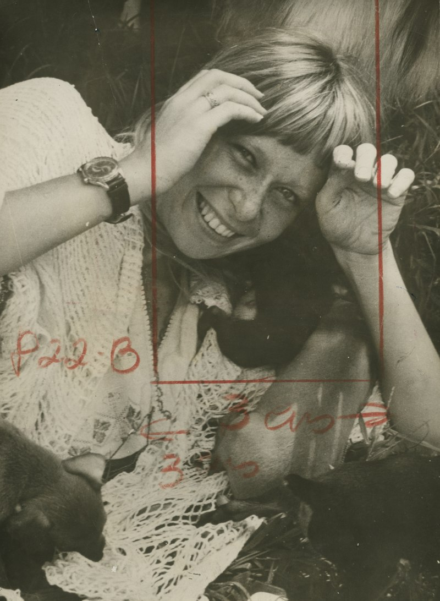

A Ovelha negra da família

O ano de 2016 marcou o lançamento de sua aguardada autobiografia "Rita Lee: uma autobiografia" (Globo Livros). O lançamento foi em sua querida cidade, São Paulo. Ela concedeu uma rara entrevista sobre o livro e sobre sua vida mais reclusa: "O maior luxo da vida é dar amor aos bichos e ter uma horta”. Além de se tornar um dos títulos mais vendidos do país, o livro coleciona críticas elogiosas. Por causa do livro, Rita foi agraciada pela APCA como melhor autora de 2016 e também pelo Grande Prêmio da Critica, pelos serviços prestados à musica.